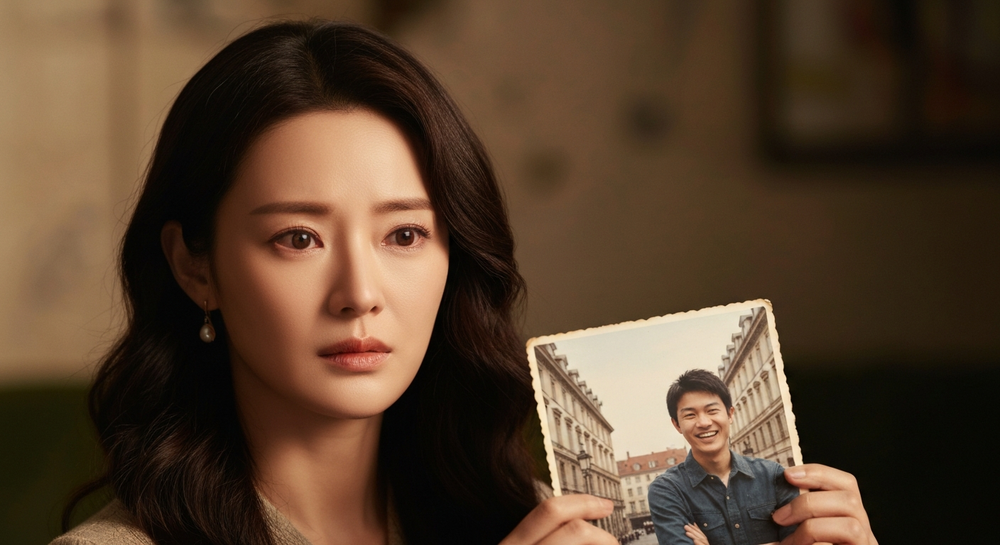
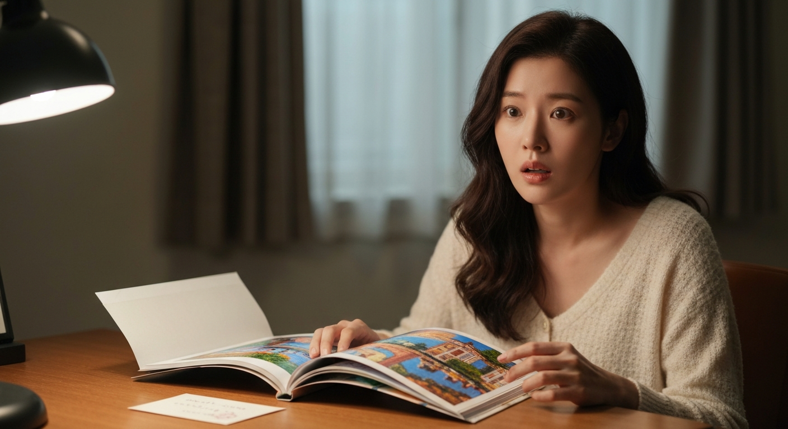
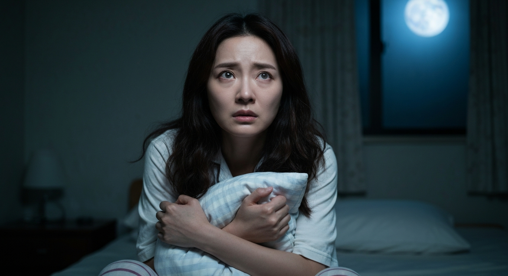
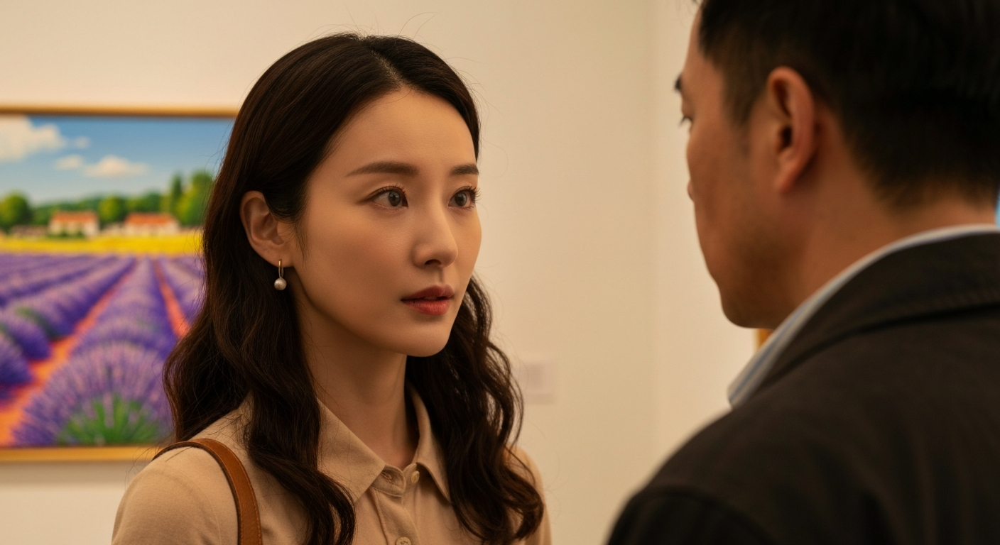
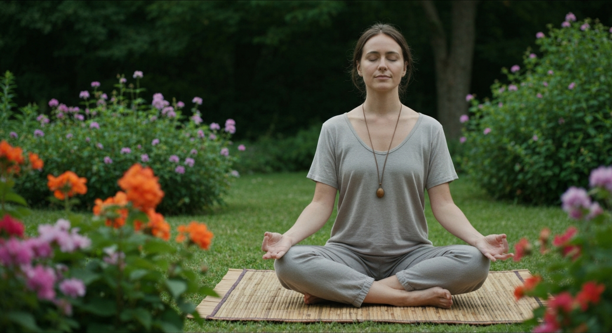

真心話大冒險的深夜密語：我卻說出了自己都不知道的秘密

第 1 篇
那晚的月光，特別適合藏匿秘密
你相信嗎？有時候，我們說出口的話，連自己都感到陌生。那晚，在小雅溫馨的客廳裡，昏黃的燈光和幾瓶冰啤酒，讓一場普通的真心話大冒險，變得有些不尋常。我們笑鬧著，彼此丟出一個個問題。當輪到我，小雅促狹地問：「你最害怕失去的是什麼？」空氣似乎凝結了，我腦中閃過無數答案，卻鬼使神差地說出：「我最害怕失去的，是我的自由。」朋友們面面相覷，我看到阿哲眼底一閃而過的不解。我曾以為自己最在乎的是穩定，是規劃好的人生，但這個脫口而出的答案，像一面鏡子，映照出我內心深處，連自己都未曾察覺的渴望。更可怕的是，這個答案背後隱藏的，是一個連我自己都不知道的巨大秘密。今夜的月光，似乎也在等著它被揭開。
💬 有時候，我們最深層的渴望，反而會透過無意識的言語浮現。
第 2 篇
自由的代價：一場無形卻沉重的契約
「自由？」阿哲輕聲重複，語氣中帶著一絲試探，彷彿想從我臉上讀出些什麼。他是我認識最久的朋友，從大學時期便見證了我從一個嚮往自由的文青，蛻變成如今追求穩定、在科技業打拼的上班族。表面上，我過著一份人人稱羨的生活：穩定的高薪工作、市中心的小套房、週末能和朋友聚會。但實際上，在那個「自由」的答案脫口而出後，我開始回溯自己的選擇。我最害怕失去自由，卻在過去十年裡，為了『安全感』，一步步放棄了許多看似不重要的自由：拒絕了跨國NGO的工作機會、放棄了獨自背包旅行的計畫、甚至選擇了『應該』喜歡的對象。這些看似微不足道的選擇，積累起來，卻像一場無形卻沉重的契約，綁住了我。想像一下，如果你每天都在做著『對的選擇』，卻沒有一天感到真正的快樂，那才是最可怕的。我的內心，開始有某個被壓抑許久的部分在蠢蠢欲動，它要求被看見。
💬 追求『正確』的人生，是否讓我們失去了『真實』的自己？

第 3 篇
舊愛的影子，與未竟的夢
那天真心話大冒險後，阿哲悄悄傳訊息給我：「你還記得大學時的那個承諾嗎？」我的心頭一震。那個承諾，是與初戀男友陳浩一起許下的，關於環遊世界、共同創業的熱血夢想。陳浩是個藝術家，他的世界充滿了不確定性與浪漫。那時的我，被他身上那股不受拘束的氣息深深吸引，我們曾計畫在畢業後，就去歐洲當背包客一年。然而，現實的壓力很快襲來。我的父母極力反對，認為藝術家沒有未來；朋友也勸我務實一點。最終，我選擇了『穩定』，與陳浩分手，進入了科技業。他呢？他真的去了歐洲，後來在法國開了自己的畫廊。他失去的是我，我失去的，卻是曾經那個敢於做夢的自己。這場分手，我以為是理性的選擇，卻沒想到，它留下的傷疤，比我想像的更深。這個「自由」的答案，會不會，就是那個我一直在逃避的陳浩？
💬 有時候，我們以為的放下，只是將記憶深埋，等待觸發。

第 4 篇
一個來自異國的包裹，打破了平靜
就在我沉浸於對過去的回憶時，一個來自法國的包裹，打破了我看似平靜的生活。包裹裡，是一本畫冊，封面是陳浩的簽名，還有他寫給我的一張小卡：「這些畫，都是你曾說過想去的地方。希望你有一天，能真正抵達。」我翻開畫冊，每一頁都繪製著世界各地的風景，其中一幅，是普羅旺斯薰衣草田，那是我們約定好要去的地方。畫冊裡夾著一張展覽邀請函，地點就在巴黎。更可怕的是，展覽時間，剛好是我的三十歲生日。這並非巧合，而是他知道我會收到。陳浩從未放棄過他的夢想，也未曾忘記我。這本畫冊，像一封無聲的邀請，邀請我重新審視自己的人生。我最大的矛盾，正在於此：渴望自由，卻被現實的鎖鏈綑綁。此刻，我必須做出一個選擇：是繼續沉淪於既定的軌道，還是冒險去追尋那個被遺忘的夢？而這個選擇，會讓我付出什麼代價？
💬 當過去的夢想再次敲門，你是否有勇氣開門？

第 5 篇
掙扎的選擇：夢想與現實的巨大拉扯
去或不去？這個問題，像兩股強大的力量，在我內心劇烈拉扯。去，意味著我可能要辭職、打破穩定，甚至面對父母的失望，以及阿哲可能的不理解。不去，我就要徹底埋葬那個關於自由的自我，永遠活在『如果當時』的遺憾中。我試圖跟阿哲傾訴我的困惑，他只是靜靜聽著，沒有給予任何評判，只說了一句：「你最害怕失去的是什麼，你知道的。」他的話，再次提醒我真心話大冒險那天，我脫口而出的秘密。那個秘密，現在正考驗著我。我甚至開始失眠，腦中不斷浮現陳浩畫裡的薰衣草田，以及我在格子間裡，日復一日重複的工作。這不是一個輕鬆的選擇，無論我選擇哪一條路，都將付出真實的代價。我深知，這場內心的掙扎，已經到了必須做出決斷的時刻。而這個決定，將徹底改變我的人生。
💬 人生最難的選擇，往往不是對與錯，而是你願意為真實的自己付出多少？

第 6 篇
巴黎的邂逅：一次遲到十年的相遇
最終，我選擇了『自由』。我提交了辭呈，訂了前往巴黎的機票。當我站在陳浩畫廊的門口，心跳如鼓。十年了，我們之間的距離，從地球的兩端，縮短到一個玻璃門。當他轉過身，我們四目相對的那一刻，時間彷彿靜止。他變了，臉上多了歲月的痕跡，眼神卻依然清澈。他微笑著，沒有抱怨，沒有質問，只有一句：「妳來了。」我們沒有擁抱，只是靜靜地看著彼此，所有未說出口的話，都在眼神中流淌。他帶我去看那幅薰衣草田的畫，我才發現，畫裡有個小女孩的背影，她戴著一條我送給他的手鍊。原來，他一直記得。這一次相遇，不是為了重燃舊情，而是為了完成一個未竟的自我探索。我終於明白，那個我脫口而出的秘密，並不是對陳浩的眷戀，而是對那個曾經勇敢追夢的自己的渴望。而現在，我站在巴黎，呼吸著自由的空氣，感覺自己真正活了過來。但這份自由，真的沒有任何代價嗎？
💬 有些相遇，不是為了舊情復燃，而是為了重新找回迷失的自己。

第 7 篇
自由的真諦：沒有完美選擇，只有真實人生
我在巴黎待了一個月，和陳浩像老朋友般交流，參觀畫展，漫步街頭。我終於意識到，我害怕失去的『自由』，並不是逃避責任，而是選擇自己真正想過的人生，並為此負責。我沒有和陳浩復合，因為我們都已經是不同的人，有了各自的成長。但我從他身上，看到了堅持自我的勇氣。回台灣後，我沒有馬上找到新工作，而是報名了烘焙課程，這是大學時被我放棄的興趣。我告訴父母我的決定，他們雖然擔憂，卻也尊重。阿哲呢？他只是給我一個大大的擁抱，說：「歡迎回來，真正的妳。」那晚真心話大冒險的秘密，最終指引我走向了另一條路。我失去了穩定的收入、可預見的未來，卻換來了內心的平靜與真實。沒有完美的選擇，只有真實的人生。而這，才是『自由』最深刻的意義。你呢？你又為了什麼，放棄了內心深處的渴望？記住，有時候，你最害怕失去的東西，正是你最需要去爭取的。
💬 真正的自由，不是你想做什麼就做什麼，而是你不想做什麼，就可以不做什麼。